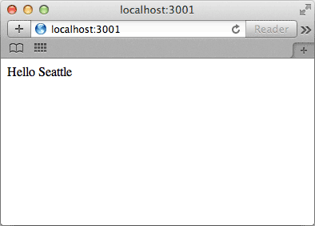
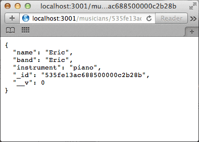
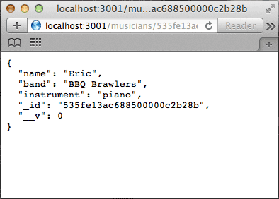

Mental Map
REST + Node.js?
REST + PHP
- Apache
- .php controllers
- .htaccess pretty urls
- Content-Type JSON Headers
- MySQLi
REST + Nodejs
- Node.js
- Express
- JavaScript modules
- Routes
- Mongo
Node.js
server.js
var http = require('http');
http.createServer(function (req, res) {
res.writeHead(200, {'Content-Type': 'text/plain'});
res.end('Hello New York\n');
}).listen(3001, '127.0.0.1');
console.log('Server running at http://127.0.0.1:3001/');
Node.js
Terminal command
$ cd noderest/
$ node server.js
- $ cd noderest/
- $ node server.js
Node.js
start node
- Server running at http://127.0.0.1:3001/
Node.js
server started

Add Dependencies
Express: App Framework for Node
package.json
{
"name": "Node REST Demo",
"description": "Demo REST API with Node",
"version": "0.0.1",
"private": true,
"dependencies": {
"express": "3.x"
}
}
Install Dependencies
Express is only dependency
$ npm install
Express
installing
- npm http GET https://registry.npmjs.org/express
- npm http 200 https://registry.npmjs.org/express
- express@3.5.2 node_modules/express
- ├── methods@0.1.0
- ├── merge-descriptors@0.0.2
- ├── cookie@0.1.2
- ├── cookie-signature@1.0.3
- ├── range-parser@1.0.0
- ├── debug@0.8.1
- ├── fresh@0.2.2
- ├── buffer-crc32@0.2.1
- ├── mkdirp@0.4.0
- ├── commander@1.3.2 (keypress@0.1.0)
- ├── send@0.3.0 (debug@0.8.0, mime@1.2.11)
- └── connect@2.14.5 (response-time@1.0.0, pause@0.0.1, connect-timeout@1.0.0, method-override@1.0.0, qs@0.6.6, basic-auth-connect@1.0.0, vhost@1.0.0, bytes@0.3.0, raw-body@1.1.4, static-favicon@1.0.2, errorhandler@1.0.0, setimmediate@1.0.1, serve-static@1.1.0, morgan@1.0.0, csurf@1.1.0, cookie-parser@1.0.1, compression@1.0.0, express-session@1.0.2, serve-index@1.0.1, multiparty@2.2.0)
- $
Add Express
server.js
var express = require('express');
var app = express();
app.get('/', function(req, res) {
res.send('Hello Seattle\n');
});
app.listen(3001);
console.log('Listening on port 3001...');
Express
restart Node with Express
CTRL+C
- $
- $ node server.js
- Listening on port 3001...
Node and Express
serving different headers

Routes
app.get('/path', function(req, res) {
res.send('Return JSON or HTML View');
});
Request
req
app.get('/musician/:name', function(req, res) {
// Get /musician/Matt
console.log(req.params.name)
// => Matt
res.send('{"id": 1,"name":"Matt",
"band":"BBQ Brawlers"}');
});
Response
res
res.send({ some: 'json' });
res.send("html for Maximum Pain's web page");
res.send(404, 'No musicians here');
res.send(500, { error: 'you blew it' });
res.send(200);
HTTP verbs
routes.js
module.exports = function(app){
var musicians = require('./controllers/musicians');
app.get('/musicians', musicians.findAll);
app.get('/musicians/:id', musicians.findById);
app.post('/musicians', musicians.add);
app.put('/musicians/:id', musicians.update);
app.delete('/musicians/:id', musicians.delete);
}
JS Modules
controllers/musicians.js
exports.findAll = function(req, res){
res.send([{
"id": 1,
"name": "Max",
"band": "Maximum Pain",
"instrument": "guitar"
}]);
};
Import Routes and JS Modules
server.js
var express = require('express');
var app = express();
require('routes')(app);
app.listen(3001);
console.log("Jammin\' on port 3001...");
Node.js
restart node server
CTRL+C
- $
- $ node server.js
- Jammin' on port 3001...
Mongo DB
controllers/musicians.js
var mongoose = require('mongoose'),
Musician = mongoose.model('Musician');
exports.findAll = function(req, res){
Musician.find({},function(err, results) {
return res.send(results);
});
};
MongoDB
start mongo
$ mongod
Mongoose.js
install Mongo Node model framework
$ npm install mongoose --save-dev
- $ npm install mongoose --save-dev
Mongoose.js
installing
- npm http GET https://registry.npmjs.org/mongoose
- npm http 200 https://registry.npmjs.org/mongoose
- > kerberos@0.0.3 install /Applications/MAMP/htdocs/noderest_project/node_modules/mongoose/node_modules/mongodb/node_modules/kerberos
- > (node-gyp rebuild 2> builderror.log) || (exit 0)
- CXX(target) Release/obj.target/kerberos/lib/kerberos.o
- SOLINK_MODULE(target) Release/bson.node: Finished
- mongoose@3.8.8 node_modules/mongoose
- ├── regexp-clone@0.0.1
- ├── muri@0.3.1
- ├── sliced@0.0.5
- ├── hooks@0.2.1
- ├── mpath@0.1.1
- ├── mpromise@0.4.3
- ├── ms@0.1.0
- ├── mquery@0.5.3 (debug@0.7.4)
- └── mongodb@1.3.23 (kerberos@0.0.3, bson@0.2.5)
- $
Update Server
server.js
var express = require('express'),
mongoose = require('mongoose'),
fs = require('fs');
var mongoUri = 'mongodb://localhost/noderest_project';
mongoose.connect(mongoUri);
var db = mongoose.connection;
db.on('error', function () {
throw new Error('unable to connect to database at ' + mongoUri);
});
var app = express();
app.configure(function(){
app.use(express.bodyParser());
});
require('./models/musicians')
require('./routes')(app);
app.listen(3001);
console.log('Listening on port 3001...');
Model Schema
models/musician.js
var mongoose = require('mongoose'),
Schema = mongoose.Schema;
var MusicianSchema = new Schema({
name: String,
band: String,
instrument: String
});
mongoose.model('Musician', MusicianSchema);
Mongo
restart Node with Mongo
CTRL+C
- $ node server.js
- Listening on port 3001...
REST GET
/musicians

Mongo Data Import
add route to routes.js
app.get('/import', musicians.import);
Mongo Data Import
add method to controller/musicians.js
exports.import = function(req, res){
Musician.create(
{ "name": "Ben", "band": "DJ Code Red", "instrument": "Reason" },
{ "name": "Mike D.","band": "Kingston Kats", "instrument": "drums" },
{ "name": "Eric", "band": "Eric", "instrument": "piano" },
{ "name": "Paul", "band": "The Eyeliner", "instrument": "guitar" }
, function (err) {
if (err) return console.log(err);
return res.send(202);
});
};
Node.js
restart node server
CTRL+C
- $ node server.js
- Listening on port 3001...
Data Imported
/musicians

Route GET to findAll
app.get('/musicians', musicians.findAll);
exports.findAll = function(req, res){
Musician.find({},function(err, results) {
return res.send(results);
});
};
Route GET to findById
app.get('/musicians/:id', musicians.findById);
exports.findById = function(req, res){
var id = req.params.id;
Musician.findOne({'_id':id},function(err, result) {
return res.send(result);
});
};
GET by Id
/musicians/:id

Route PUT to update
app.put('/musicians/:id', musicians.update);
exports.update = function(req, res) {
var id = req.params.id;
var updates = req.body;
Musician.update({'_id':id}, req.body,
function (err, numberAffected) {
if (err) return console.log(err);
console.log('Updated %d musicians', numberAffected);
});
}
PUT
use cURL to test
$ curl -i -X PUT -H 'Content-Type: application/json'
-d '{"band": "BBQ Brawlers"}'
http://localhost:3001/musicians/535fe13ac688500000c2b28b
- curl -i -X PUT -H 'Content-Type: application/json' -d '{"instrument": "voice"}' http://localhost:3001/musicians/535ea3fc29b5c50000c685db
- HTTP/1.1 200 OK
- X-Powered-By: Express
- Content-Type: application/json; charset=utf-8
- Content-Length: 88
- Date: Mon, 28 Apr 2014 22:27:04 GMT
- Connection: keep-alive
-
- {
- "updatedExisting": true,
- "n": 1,
- "connectionId": 330,
- "err": null,
- "ok": 1
- }
- Updated 1 musicians
- $
Updated
/musicians/:id

Route POST to add
app.post('/musicians', musicians.add);
exports.add = function(req, res) {
Musician.create(req.body, function (err, musician) {
if (err) return console.log(err);
return res.send(musician);
});
}
POST
use cURL to test
$ curl -i -X POST -H 'Content-Type: application/json' -d
'{"name": "Joe", "band": "Abita Boys",
"instrument":"voice"}'
http://localhost:3001/musicians
- curl -i -X POST -H 'Content-Type: application/json' -d '{"name": "Joe", "band": "Abita Boys", "instrument":"voice"}' http://localhost:3001/musicians
Route DELETE to delete
app.delete('/musicians/:id', musicians.delete);
exports.delete = function(req, res){
var id = req.params.id;
Musician.remove({'_id':id},function(result) {
return res.send(result);
});
};
DELETE
use cURL to test
$ curl -i -X DELETE
http://localhost:3001/musicians/535feac1cc539500000a209f
- curl -i -X DELETE http://localhost:3001/musicians/535fe565c688500000c2b28d
- HTTP/1.1 200 OK
- X-Powered-By: Express
- Content-Length: 0
- Date: Tue, 29 Apr 2014 18:10:25 GMT
- Connection: keep-alive
Deleted
/musicians